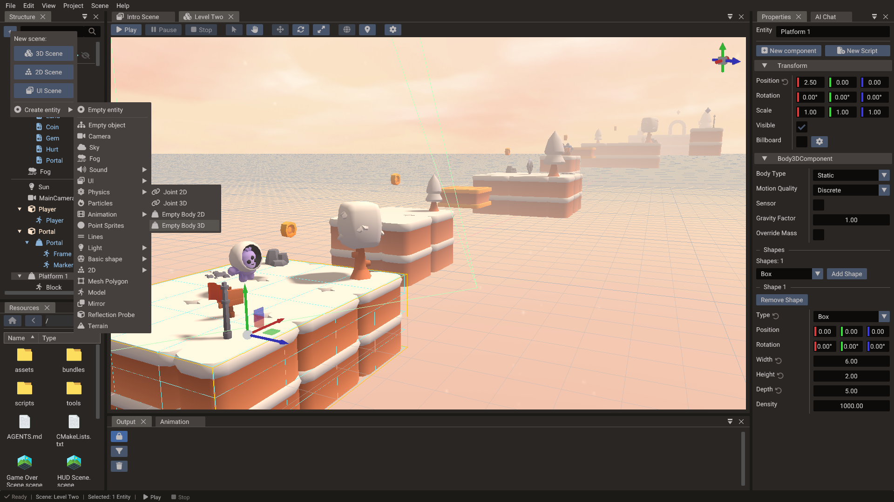

Physics¶
Quantum includes integrated physics for both 2D and 3D games, so you can add realistic movement, collisions, and interactions without external libraries.

Physics backends¶
| Dimension | Backend |
|---|---|
| 2D | Box2D |
| 3D | Jolt Physics |
Both backends are integrated into the engine and exposed through the same ECS-based workflow. Each one can be left out of exported games that do not use it — see Project Settings → Physics backends. The editor and Play always have both.
Core concepts¶
- Rigid bodies — give entities physical behavior so they respond to forces and gravity. Bodies can be static, kinematic, or dynamic.
- Colliders / shapes — define the volume used for collision detection (boxes, spheres, capsules, polygons, and more).
- Joints — constrain bodies together to model hinges, sliders, and other mechanical connections.
- Collision detection — the physics system detects overlaps and contacts between bodies each step.
Typical workflow¶
- Add a physics body component to an entity (New component → 2D Physics Body or 3D Physics Body), or create an empty body or a joint from Create entity → Physics in the Structure panel.
- Attach one or more collision shapes that match its geometry.
- Configure mass, friction, restitution, and body type.
- Let the physics system step the simulation each frame, updating transforms.

You can react to collisions in your game logic to trigger gameplay events such as damage, pickups, or sounds.
Gravity¶
Each scene has its own gravity, because each scene has its own physics worlds (see
Physics across scenes). The 2D and 3D worlds are independent:
gravity2D drives the Box2D world and gravity3D drives the Jolt world. Both default to
(0, -9.81) m/s².
In the editor, select the scene in the Properties window and set Gravity in the Physics section — 2D scenes edit the 2D world, 3D scenes the 3D world. The value is saved with the scene and applied in exported projects.
Scale the response per body with Body2D — gravityScale or Body3D — gravityFactor. Changing gravity at runtime does not wake sleeping bodies — they pick up the new value when something wakes them.
2D physics¶
2D physics uses Box2D. A body can contain several shapes and each shape can have
density, friction, restitution, sensor state, and collision filtering. In exported games
a body holds at most MAX_SHAPES_2D shapes and a shape at most MAX_SHAPE_POINTS_2D
points. They default to 4 and 8, and the export raises them when your scenes or bundles
use more.
| Shape | Use it for |
|---|---|
| Box/polygon | Platforms, crates, walls, characters with simple silhouettes |
| Circle | Balls, radial triggers, wheels |
| Capsule | Characters, rounded obstacles |
| Segment | Thin walls and edges that block from both sides |
| Chain | Terrain outlines and hollow containers; blocks from one side only |
Body2D body = object.getBody2D();
body.createBoxShape(64, 32);
body.setType(BodyType::DYNAMIC);
body.setLinearVelocity(Vector2(200, 0)); // points per second
Chain shapes¶
A chain is a line of connected edges for level outlines: bodies slide along it without catching where edges meet. It collides on one side only, to the right of each edge going from one vertex to the next. Counter-clockwise vertices make a closed chain solid from the outside, like a platform. Clockwise vertices make it solid from the inside, like a ring that keeps a ball in. Rotating or mirroring the body doesn't change the side.
When a body is selected, ticks on its chain edges point to the colliding side, and Collision Side → Reverse in the shape's properties flips it. Loop closes the chain. An open chain doesn't collide on its first and last edges, so add one extra vertex at each end. Chains have no mass, so use them on static or kinematic bodies. See Body2D — createChainShape for code.
3D physics¶
3D physics uses Jolt Physics. Bodies can use primitives, compound shapes, mesh shapes, or height fields. Use simple primitives for dynamic bodies whenever possible, and reserve mesh shapes for static world geometry.
| Shape | Use it for |
|---|---|
| Box/sphere/capsule/cylinder | Dynamic props and characters |
| Convex hull | Medium-complexity dynamic objects |
| Mesh | Static level collision |
| Height field | Terrain collision |
Body3D body = object.getBody3D();
body.createCapsuleShape(0.8f, 0.25f);
body.setType(BodyType::DYNAMIC);
body.setAllowedDOFs2DPlane();
2D sensors¶
In 2D the flag lives on each shape, so one body can mix solid and trigger shapes (a
character with a solid box and a foot sensor, a chest with a solid lid and a pickup zone).
Tick Sensor on the shape in the Body2D component of the Properties window — the editor
draws sensor shapes in orange — or set it from code with
Body2D — setShapeSensor. A sensor never
pushes anything; its overlaps arrive through beginSensorContact2D / endSensorContact2D
on the PhysicsSystem, which name the sensor first
and the visitor second. A sensor always reports its overlaps (its sensor events are
implied), so give shapes a category bit so the callback can tell a coin from a spike:
Body2D coin = coinSprite.getBody2D();
coin.createCircleShape(Vector2(0, 0), 22.0f);
coin.setShapeSensor(true);
coin.setCategoryBitsFilter(0x0010);
// on the hero
REGISTER_EVENT(scene->getSystem<PhysicsSystem>()->beginSensorContact2D, onSensor);
void Hero::onSensor(Body2D sensor, unsigned long shape, Body2D visitor, unsigned long) {
if (visitor.getEntity() != getEntity()) return;
if (sensor.getCategoryBitsFilter(shape) & 0x0010) collect(sensor.getEntity());
}
Two sensors never report each other, and ray casts ignore sensor shapes.
3D sensors¶
A whole 3D body can be turned into a trigger volume with the Sensor flag: it still reports contacts, but produces no collision response. Use it for checkpoints, pickup volumes, damage zones, and detection areas.
In the editor, tick Sensor in the Body3D component of the Properties window. The flag
is stored on the component, so it is saved with the scene, applied in exported projects,
and kept when the body is rebuilt (for example after changing shapes). From code, set it
with Body3D — sensor before or after load():
Sensor overlaps arrive through the regular 3D contact events below, and the
Contact3D passed to them carries a sensor flag so
trigger contacts can be told apart from solid ones. A static sensor only sees awake
dynamic and kinematic bodies; make the sensor itself dynamic or kinematic when it must
also detect sleeping bodies.
Buoyancy¶
A dynamic 3D body floats in a Water once its
buoyancy is above 0. Every fixed step, while the body's centre of mass is inside the
water's area, the engine pushes it up by the part of its shape below the wave surface and
tilts it with the waves, then drags it with the water. No script is needed.
In the editor, the Body3D component of a dynamic body has a Buoyancy section:
| Field | Default | Purpose |
|---|---|---|
| Buoyancy | 0 |
1 is neutral, more floats and less sinks. 0 ignores the water. |
| Drag | 0.5 |
How much the water slows the body down. Shown when Buoyancy is above 0. |
| Angular Drag | 0.01 |
How much the water slows the body rotation. Shown when Buoyancy is above 0. |
A box with a buoyancy of 2 floats about half under, 1.4 about 70% under, and 0.8
sinks slowly. The values are saved with the scene and applied in exported projects; from
code they are Body3D — buoyancy,
waterDrag, and waterAngularDrag:
The water has no current: a floating body bobs and rocks with the waves but is not carried along by them. Bodies outside every water's area, and static or kinematic bodies, are not affected. Neither are bodies inside a Water Exclusion, so cargo rests on the floor of a boat; the boat, which owns the volume, still floats. For an object without physics, read the surface with Water.getHeight instead.
The Water component has a Buoyancy section too:
| Field | Default | Purpose |
|---|---|---|
| Buoyancy | On | Floats the bodies whose Buoyancy is above 0. Turn it off for water that is only for show. |
| Depth | 0 |
How far below the surface bodies still float. 0 has no bottom. Shown when Buoyancy is on. |
Where waters overlap, a body floats in the one with the highest bottom that it is still
above, so a pool with a Depth over a lake floats only the bodies inside it and the lake
floats the rest. The bottom is not a floor: a body that plunges below it sinks through, so
give a pool a collider too. From code they are
Water — buoyancy and
buoyancyDepth.
Moving a body¶
A physics body owns its own pose. The engine syncs it with the entity's transform once per fixed step: transform → body before the step, body → transform after it. Which API you use depends on where your code runs.
| Where | Continuous movement | Teleport |
|---|---|---|
onFixedUpdate |
setLinearVelocity / applyForce |
Body2D/Body3D setPosition |
onUpdate |
not recommended for bodies | Object::setPosition also works |
Transform positions and rotations written in onFixedUpdate are discarded
Engine::onFixedUpdate runs between those two syncs. A position or rotation
written to the transform there is read back over by the post-step sync before
anything renders it, so the write silently does nothing — no error, no warning,
unless you also call Object::updateTransform() to refresh the world transform the
pre-step sync reads. Moving a parent of a body-carrying entity has the same
effect on the body. The body pose API below avoids the whole ordering question.
The exact scope is worth knowing:
- 3D bodies — always. The post-step sync writes back every body each step.
- 2D bodies — only when Box2D reports the body as moved. A sleeping or static
Body2Dproduces no move event, so a transform write there survives and reaches the body on the next sync. Do not rely on it: whether a body sleeps is the simulation's decision, not yours. - Scale — not affected. Neither path writes scale back, so
Object::setScalepersists. Only its effect is delayed: the collider is resized once the world scale refreshes in the next variable-timestep pass.
Use the body's own pose API instead. It writes to the simulation directly and updates the transform for you, so it works from any callback:
void Player::onFixedUpdate() {
// Continuous movement: let the solver do the work
body.setLinearVelocity(Vector3(input.x * speed, body.getLinearVelocity().y, input.z * speed));
// Teleport: write the body pose, never the transform
if (fellOffTheMap) {
body.setPosition(spawnPoint);
body.setLinearVelocity(Vector3::ZERO);
}
}
Entities without a physics body have no such restriction — Object::setPosition
works from onFixedUpdate as usual.
Prefer velocities and forces over teleporting whenever the motion is continuous.
Teleporting skips collision detection between the old and new pose, so a body can pass
straight through walls. Do not scale forces or torques by Engine::getDeltatime(): the
solver already integrates them over the fixed step.
A kinematic body is the exception to teleporting: when its transform changes outside
the fixed step — an animation, a moving
parent, or Object::setPosition in onUpdate — the body moves there with a velocity over
the fixed steps of the frame. That velocity carries the bodies standing on a moving
platform and pushes the ones in its way. To jump a kinematic body somewhere instead, use
its setPosition.
Smooth motion between steps¶
The simulation advances in fixed steps, 60 per second by default, while frames come as fast as the display allows. So that a body does not jump once per step and stand still in between, its transform is interpolated: every frame it is drawn between the body's poses at the last two steps. The transform then trails the body by less than one step.
- Gameplay logic reads the body:
Body2D/Body3DgetPositionandgetRotation. - Whatever follows the body on screen, such as a camera, reads the transform
(
Object::getWorldPosition). Following the body pose brings the per-step jumps back. setPositionon the body or the object is a jump: the body is drawn there at once, not on its way there.- A body moved by its transform, like an animated kinematic platform, is drawn where the transform puts it.
To have the transform hold the body pose of the last step instead, turn it off with
PhysicsSystem::setInterpolation(false) (scene:getPhysicsSystem().interpolation = false
in Lua).
Contacts and filtering¶
The physics system exposes contact subscriptions so you can react to collisions in game
logic. 2D bodies use beginContact2D, endContact2D, hit, sensor, and preSolve2D
events — use begin/end for gameplay state, hit for impacts, and pre-solve when a contact
should be conditionally disabled. Shapes opt in to these: a pair reports begin/end, hit or
pre-solve events only when one of its shapes has Contact Events, Enable Hit Events
or PreSolve Events on, and all are off by default (see
Body2D events).
A 2D event whose body was destroyed or recreated before it was dispatched is dropped, so
an end event does not come for a body that no longer exists.
3D bodies instead use onContactAdded3D,
onContactPersisted3D, and onContactRemoved3D (plus onBodyActivated3D /
onBodyDeactivated3D); each added/persisted callback receives a
Contact3D carrying the contact normal and points.
Collision filters use category and mask bits. Put broad gameplay groups into category bits, such as player, enemy, world, projectile, and trigger. Use masks to decide which groups interact.
What a 3D callback may do¶
3D contact events run while Jolt is stepping, unlike the 2D begin/end/sensor/hit events,
which Box2D queues and the engine dispatches once the step is over (preSolve2D and
shouldCollide2D are the 2D exceptions: they are filter hooks called mid-step).
Reading and moving bodies is fine there — velocities, positions, ray casts
— but the broad phase is locked for the duration, so a body or joint cannot be created
from a callback: the call is refused and logged, and the next update retries it. Teardown
is queued instead of refused, so removing a Body3DComponent from a callback still
destroys its body, just after the step finishes.
Keep callbacks to recording what happened — a flag, a score, an entity to act on — and do
the work from onUpdate or onFixedUpdate. PhysicsSystem::isSteppingWorld3D()
(physics.steppingWorld3D in Lua) reports the window for helpers called from both.
Raycasts and ground checks¶
A common need for character controllers is knowing whether a body is standing on the
ground. Quantum has no built-in isGrounded() flag, but you can build a reliable check
two ways.
Downward raycast (recommended)¶
Cast a short Ray straight down from the body's feet and
test it against the 3D physics world with RayFilter::BODY_3D. Checking normal.y lets
you reject steep walls so only near-horizontal surfaces count as ground.
bool isGrounded(Body3D& body, Scene* scene, float feetOffset, float probe = 0.15f) {
// feetOffset = distance from the center of mass down to the soles
// (for a capsule: halfHeight + radius)
Vector3 com = body.getCenterOfMassPosition();
Vector3 origin = com - Vector3(0, feetOffset - 0.05f, 0); // start just above the soles
Ray ray(origin, Vector3(0, -(probe + 0.05f), 0)); // direction also sets the length
// Pass the body so the ray continues through it instead of stopping at a self-hit
RayReturn result = ray.intersects(scene, RayFilter::BODY_3D, body.getEntity());
return result.hit
&& result.normal.y > 0.7f; // ~45 degree slope limit
}
Pass onlyStatic or category/mask bits to restrict what counts as ground, for example
ray.intersects(scene, RayFilter::BODY_3D, true, groundCategory, groundMask, body.getEntity()).
The same Ray API is available in Lua (RayFilter.BODY_2D or RayFilter.BODY_3D). The
returned RayReturn also carries the hit distance,
which is handy for step snapping or coyote-time.
A game without a physics backend can still cast against mesh bounds with
RayFilter::BOUNDS. It tests each mesh's axis-aligned box rather than a collider, so it
suits picking and line-of-sight more than ground checks — see
RayFilter.
Contact normal (event-driven)¶
If you already subscribe to contact events, inspect the contact normal instead of
raycasting. Read Contact3D::getWorldSpaceNormal()
inside onContactAdded3D / onContactPersisted3D. Jolt's normal points from body 1
toward body 2, and Jolt — not your code — decides which body is which, so flip the sign
when your character is body 1:
Vector3 n = contact.getWorldSpaceNormal();
Vector3 up = (bodyA.getEntity() == characterEntity) ? n * -1.0f : n;
bool grounded = up.y > 0.7f;
Track grounded state with a contact counter (increment on onContactAdded3D, decrement
on onContactRemoved3D) rather than a single bool, so multiple simultaneous contacts are
handled correctly.
Joints¶
Quantum exposes 2D and 3D joint wrappers for constrained motion. 2D joint types are distance, revolute, prismatic, mouse, wheel, weld, and motor joints. With Rope enabled, a distance joint lets the bodies move closer but never farther apart than when it was created. In 3D, use constraints and allowed degrees of freedom to lock or limit movement.
Both bodies of a joint must be in the joint's own scene.
Physics across scenes¶
Every scene owns its own Box2D and Jolt worlds. Only the worker threads and temporary memory are shared between them. When a scene stack runs several scenes at once, for example a gameplay scene with a HUD or a world made of chunk scenes, those worlds stay apart:
- A body in one scene never collides with a body in another scene, and never triggers its sensors.
- A ray cast against a
Scene*tests only that scene's world. The returnedRayReturn::bodyis an entity ID that only means something in that scene. - Contact events report only the bodies of their own scene.
- A joint's
bodyAandbodyBare looked up in the joint's scene. The editor accepts only same-scene entities in those fields. - Only scenes on the engine are stepped. A scene removed with
SceneManager.removeChildScenekeeps its bodies, frozen, until it is added again.
There is no API that spans worlds. The approaches below go from simplest to most work.
Keep interacting bodies in one scene¶
This is the recommended setup. Put everything that has to touch physically in one scene, and use child scenes for the parts that don't take part in gameplay physics: HUD, menus, lighting and sky. A gameplay scene with a UI overlay needs nothing more.
Ray cast several scenes¶
Cast the same ray against each scene and keep the closest hit. Keep the scene next to
the hit, because the entity ID needs it. distance is a fraction of the ray's length,
so hits from different scenes compare directly.
struct SceneHit {
Scene* scene = nullptr;
RayReturn hit = Ray::NO_HIT;
};
SceneHit raycastScenes(const Ray& ray, RayFilter filter) {
SceneHit best;
for (Scene* scene : Engine::getScenesSnapshot()) {
RayReturn hit = ray.intersects(scene, filter);
if (hit.hit && (!best.scene || hit.distance < best.hit.distance)) {
best.scene = scene;
best.hit = hit;
}
}
return best;
}
-- Lua has no getScenesSnapshot: pass the IDs of the scenes to test
local function raycastScenes(ray, filter, sceneIds)
local bestScene, bestHit = nil, nil
for _, id in ipairs(sceneIds) do
local scene = SceneManager.getScenePtr(id)
if scene then
local hit = ray:intersects(scene, filter)
if hit.hit and (bestHit == nil or hit.distance < bestHit.distance) then
bestScene, bestHit = scene, hit
end
end
end
return bestScene, bestHit
end
local ids = { SceneManager.getSceneId("Level"), SceneManager.getSceneId("Props") }
local scene, hit = raycastScenes(ray, RayFilter.BODY_3D, ids)
This only works when the scenes share one coordinate space. An overlay drawn with its
own camera needs its own ray, built with that scene's Camera::screenToRay. To test a
single known body, ray.intersects(body) works for a body of any scene.
Collide across scenes with a proxy body¶
To make a body in scene A push bodies in scene B, give scene B a kinematic stand-in with the same shape, and move it to follow the real body.
Move the proxy from onFixedUpdate, which runs once per fixed step before any scene's
world steps. Set its velocity toward the target rather than its position. Setting the
position teleports it, so it won't push other bodies properly.
This works one way only: the proxy pushes bodies in B, but nothing in B pushes the real
body back. To get a response, handle the proxy's contacts in scene B
(onContactAdded3D) and apply impulses to the real body in scene A yourself. If you
need full two-way physics, put both bodies in the same scene.
Move a body to another scene¶
Quantum has no transfer API. Recreate the entity in the target scene instead:
- Read the position, rotation,
linearVelocityandangularVelocityof the old body. - Create the entity in the target scene, or instance a bundle there, and set those values on its new body.
- Destroy the old entity.
Don't do this inside a contact callback, while isSteppingWorld3D() is true (see
What a 3D callback may do). Note what needs to move in the
callback, then move it in onUpdate or onFixedUpdate.
The new entity has a new ID, so update anything that refers to it. Contacts, sleep state and joints don't carry over.
Practical guidance¶
- Prefer primitive collision shapes for dynamic entities.
- Keep visual meshes and collision meshes separate.
- Use sensors for triggers, pickups, and detection volumes.
- Use fixed update logic for physics-driven gameplay.
- Tune gravity and meter scale before authoring a large scene.
Next steps¶
Bring everything together and ship your game in Export Window.